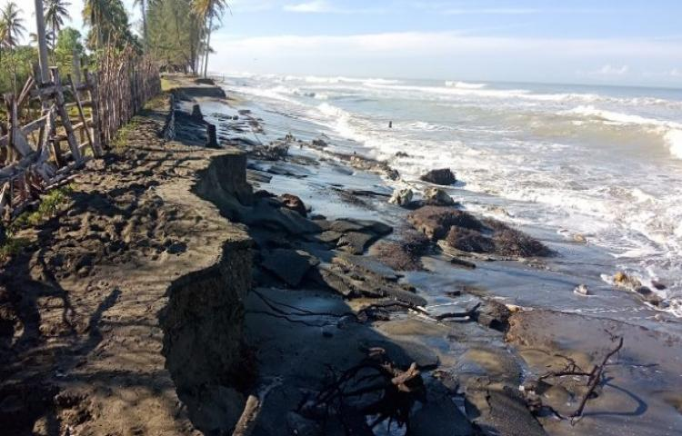
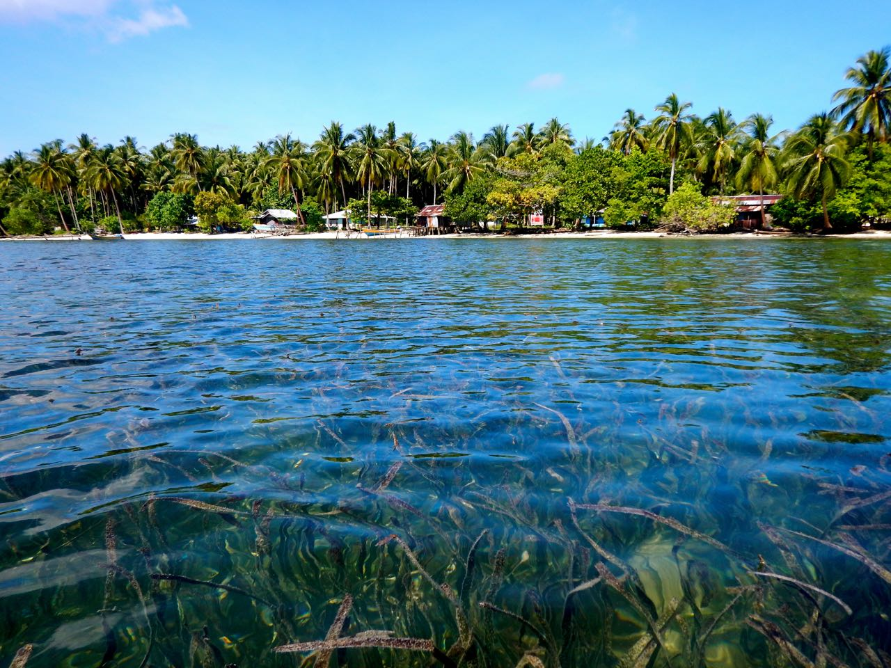

Deskripsi Kasus
Desa Bedono yang terletak di wilayah pesisir Kabupaten Demak merupakan salah satu daerah yang terdampak abrasi pantai cukup parah di Jawa Tengah. Fenomena ini terjadi akibat kombinasi faktor alami seperti gelombang laut dan kenaikan muka air laut, serta aktivitas manusia seperti alih fungsi lahan pesisir. Dampaknya tidak hanya menyebabkan berkurangnya luas daratan, tetapi juga mengancam keberadaan ekosistem mangrove yang memiliki peran penting dalam menjaga keseimbangan lingkungan pesisir. Berbagai program rehabilitasi dan penanaman mangrove telah dilakukan sebagai upaya untuk memulihkan kondisi lingkungan di kawasan tersebut.
Mengapa Penting?

Evaluasi Keberhasilan Restorasi Mangrove
Monitoring perubahan mangrove diperlukan untuk menilai efektivitas program rehabilitasi yang telah dilakukan. Dengan data time series, perkembangan vegetasi dapat diamati secara objektif dari waktu ke waktu.

Mitigasi Risiko Abrasi Pantai
Mangrove berfungsi sebagai pelindung alami yang mampu meredam energi gelombang laut. Informasi kondisi mangrove sangat penting untuk mendukung upaya pengurangan risiko abrasi di wilayah pesisir.

Perlindungan Ekosistem Pesisir
Mangrove merupakan habitat penting bagi berbagai biota laut dan pesisir. Pemantauan kondisi mangrove membantu memastikan keberlanjutan fungsi ekologis kawasan tersebut.
Mendukung Pengambilan Keputusan Berbasis Data
Hasil analisis geospasial dapat menjadi dasar dalam perencanaan pengelolaan wilayah pesisir yang lebih berkelanjutan dan berbasis data ilmiah, sehingga kebijakan yang diambil menjadi lebih tepat sasaran.